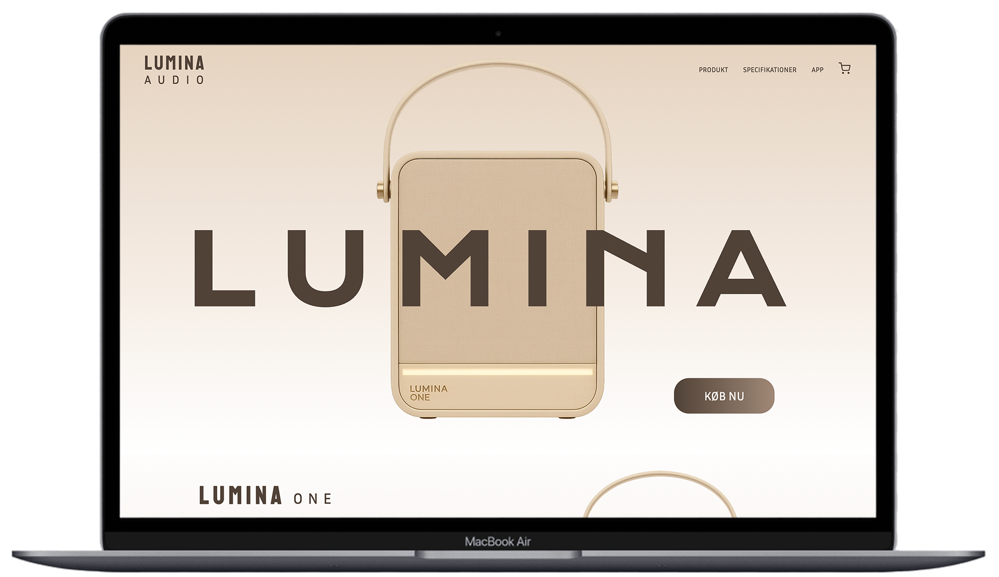

LUMINA - redesign

01
Projektet
Projektbeskrivelse kommer snart.
Link til redesign af LUMINA: https://mathildedamsgaard.github.io/redesign-lumina-projekt/

01
Projektbeskrivelse kommer snart.
Link til redesign af LUMINA: https://mathildedamsgaard.github.io/redesign-lumina-projekt/